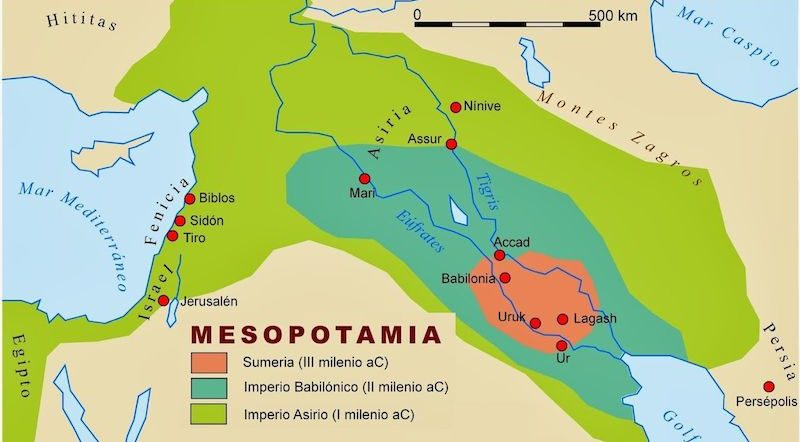

Mesopotania
Mesopotamia es considerada una de las primeras civilizaciones de la humanidad. Su nombre significa "tierra entre ríos", ya que estaba ubicada entre los ríos Tigris y Éufrates, en lo que hoy es Irak y partes de Siria, Turquía e Irán. Aquí surgieron algunas de las primeras ciudades, como Ur, Uruk y Babilonia.
Esta región fue hogar de varias civilizaciones influyentes, como los sumerios, acadios, babilonios y asirios. Crearon avances notables en escritura (como la escritura cuneiforme), matemáticas, arquitectura y leyes (por ejemplo, el Código de Hammurabi). Además, su agricultura floreció gracias a sistemas de irrigación complejos. Mesopotamia también es famosa por sus relatos épicos, como la Epopeya de Gilgamesh, que es una de las primeras obras literarias de la historia.
Otro concepto relacionado con Mesopotamia es la zigurat. Los zigurats eran grandes estructuras en forma de pirámide escalonada que servían como templos en las ciudades mesopotámicas. Se construían con ladrillos de barro y podían tener varios niveles, con una escalinata que llevaba al santuario en la cima. Los sacerdotes realizaban ceremonias allí para honrar a los dioses. Cada ciudad tenía su zigurat principal dedicado a su dios protector. Por ejemplo, el zigurat de Ur estaba dedicado a Nanna, el dios de la luna. Estas imponentes construcciones eran símbolos de poder religioso y político en la antigua Mesopotamia.
Ubicacion Historica
Mesopotamia es considerada una de las primeras civilizaciones de la humanidad. Su nombre significa "tierra entre ríos", ya que estaba ubicada entre los ríos Tigris y Éufrates, en lo que hoy es Irak y partes de Siria, Turquía e Irán. Aquí surgieron algunas de las primeras ciudades, como Ur, Uruk y Babilonia.

La Mesopotamia fue habitada por distintos pueblos, como los sumerios, los acadios, los babilonios, los asirios y los caldeos. Algunos de ellos fundaron grandes imperios (como los asirios) pero a partir del siglo VI a. C. la región fue sometida por imperios vecinos (como los persas, los macedonios o los partos). En la antigua Mesopotamia se realizaron importantes obras arquitectónicas, como los zigurats (templos) o los palacios asirios, y se compusieron relatos como el mito del diluvio universal o la epopeya de Gilgamesh. También se elaboraron las primeras compilaciones de leyes, como el Código de Hammurabi.
Esas condiciones naturales resultaron las bases de la economía de la región. La agricultura y la cría de animales fueron las actividades que permitieron una vida sedentaria. La Mesopotamia se divide en dos partes: la Alta Mesopotamia, que abarca la zona montañosa del norte donde nacen los ríos, y la Baja Mesopotamia, que incluye la zona sur con la desembocadura de los ríos en Golfo Pérsico.